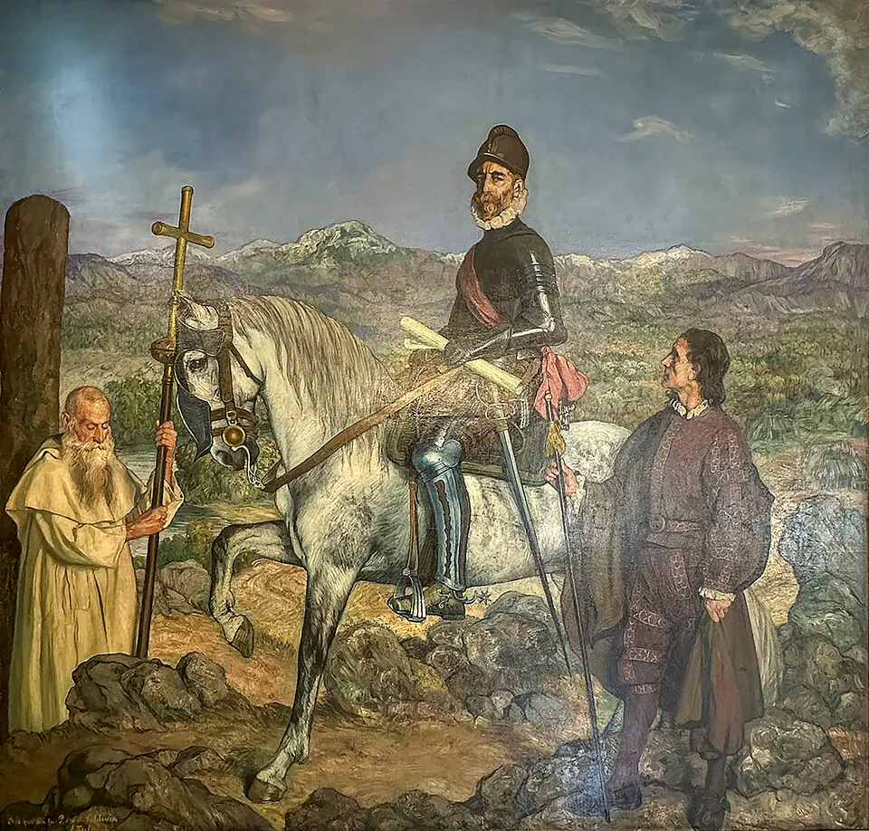

Batalla de Tucapel

Tras fundar ciudades al sur del Río Biobío, como Concepción (1550) y Valdivia (1552), los españoles levantaron fuertes en el Wallmapu y obligaron a muchas comunidades a trabajar en lavaderos de oro. A fines de 1553, los mapuche se alzaron y atacaron el fuerte de Tucapel, cerca de la actual Cañete.
Pedro de Valdivia acudió con una fuerza reducida de españoles y auxiliares indígenas. El 25 de diciembre de 1553 lo enfrentó un ejército mapuche en el que tuvo un papel clave Lautaro, quien había sido caballerizo de Valdivia y conocía las tácticas españolas. Los mapuche atacaron en oleadas sucesivas que agotaron a jinetes y caballos, hasta derrotar por completo a los españoles. Valdivia fue capturado y muerto; las crónicas dan versiones distintas de su muerte, y algunas son más leyenda que historia.
La derrota abrió una etapa de victorias mapuche. Lautaro venció de nuevo en Marihueñu (1554) y llevó la guerra hacia el norte, hasta morir en combate en 1557. Tucapel mostró que la conquista del sur no sería rápida y marcó el inicio de una larga guerra, narrada después en La Araucana.
Versión para niños
Cuando los españoles llegaron al sur, el pueblo mapuche defendió su territorio. Uno de sus líderes fue Lautaro. De joven, Lautaro había sido capturado y obligado a servir a Pedro de Valdivia, cuidando sus caballos. Así aprendió cómo combatían los españoles. Luego escapó y volvió con su gente. En diciembre de 1553, cerca del fuerte de Tucapel, los mapuche guiados por Lautaro vencieron a los españoles. Valdivia fue tomado prisionero y murió.
Para maestros
Nivel sugerido: 5° básico
Objetivo: Analizar la resistencia mapuche a la conquista a partir de la Batalla de Tucapel y el liderazgo de Lautaro.
Preguntas para la clase:
- ¿Qué aprendió Lautaro mientras estuvo con los españoles y cómo lo usó?
- ¿Por qué los mapuche se alzaron contra los españoles?
- ¿Por qué existen distintas versiones sobre la muerte de Valdivia?
Actividad (20–30 min): Los estudiantes leen dos relatos breves de la batalla, uno desde la mirada española y otro desde la mirada mapuche, preparados por el docente a partir de las fuentes sugeridas. En parejas, completan una tabla con semejanzas y diferencias, y discuten por qué una misma batalla puede contarse de formas distintas.
Fuentes sugeridas: Memoria Chilena; Biblioteca Nacional Digital; Museo Histórico Nacional.
Objetivos de Aprendizaje (Currículum Nacional)
- 5° básico · HI05 OA 02 Describir el proceso de conquista de América y de Chile … algunas expediciones y conflictos bélicos, y la fundación de ciudades
- 5° básico · HI05 OA 07 Explicar y dar ejemplos de las distintas formas en las que españoles y mapuches se relacionaron … resistencia mapuche y guerra de Arauco
- 8° básico · HI08 OA 12 … las formas de convivencia y los tipos de conflicto que surgen entre españoles, mestizos y mapuches como resultado del fracaso de la conquista de Arauco
Personajes
Revisión humana pendiente. Cómo se revisa · Reportar un error
Cómo citar: Historia de Chile. (2026). Batalla de Tucapel. En Historia de Chile: atlas y línea de tiempo. https://moises-salgado.github.io/historia-de-chile/momento/batalla-de-tucapel.html